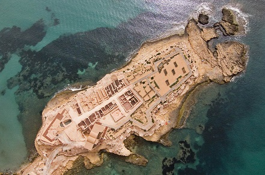

|
La Illeta Dels
Banyets
La Illeta del Banyets se localiza
en Campello (Alicante).

Originariamente era una península,
pero en la edad media debido a la erosión o algún fenómeno geográfico se
abrió un canal convirtiéndola en una isla.
Sus orígenes se remontan a finales del tercer milenio a.e.c. Sus
pobladores vivían en cabañas de planta circular. Posteriormente fue de
nuevo habitada en la edad del bronce. En esta época se construyeron dos
cisternas labradas en la roca. De esta época se conservan los canales de
abastecimiento. Con los iberos llegaron los nuevos pobladores. Se crea
un poblado con calles organizadas en torno a las cuales se edifica. De
esta época se conserva el aljibe escavado en la roca y dos templos se
influencia semita. El poblado tenia instalaciones para la transformación
de los productos agrícolas y pesqueros. Frente al yacimiento se hallaron
varios hornos para la fabricación de ánforas. Se han hallado restos
cerámicos griegos y punidos.
Tras el abandono de tres siglos sobre los restos prehistóricos e iberos
se alzó una villa romana con termas. Esta datada en el siglo I. De época
romana son los conocidos baños de la reina, piscifactorías romanas donde
se criaban los peces.
Únicas piscifactorías en Hispania junto a las de Javea y Calpe.
En febrero de 2011 se descubrió un
pequeño edificio de época ibérica datado entre el siglo IV y el III
a.e.c. Se trata de una posible almazara donde se fabricaba aceite y
trataban diferentes materias primas. Esta almazara vendría a completar
la cadena de producción donde se comercializaba con vino, aceite y
salazones.
En octubre de 2020, hallan en la
Illeta restos de un recinto prerromano para la conservación de pescado.
Los descubrimientos del MARQ en el yacimiento de El Campello revelan un
gran número y variedad de infraestructuras productivas de la primera
mitad del siglo III a.e.c.
|